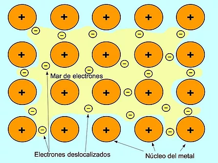

Los enlaces metálicos son el resultado de las interacciones electrostáticas entre los electrones que transitan libremente fuera de los orbitales (llamados electrones deslocalizados), de sus átomos metálicos y los resultantes átomos metálicos cargados de forma positiva o catiónica. Los enlaces metálicos son los responsables de las propiedades físicas de los metales, como: dureza ductilidad maleabilidad brillo punto de fusión y ebullición
